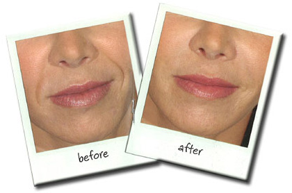

This painless procedure gently exfoliates the outer layer of dead skin on the face and neck. It subtly and gradually erases imperfections and sun damage. There is no downtime, and makeup may be applied immediately. Microdermabrasion improves blackheads, fine lines, sun damage, acne-prone skin, superficial age spots and oily skin. All skin types and colors can be treated.
Botox® is a naturally occurring muscle-relaxing agent derived from bacteria. It is injected with a very fine needle into specific facial muscles. This results in relaxation of the muscles, and the overlying skin becomes smoother and much less wrinkled. It is safe, and the treatment typically lasts three to four months. After several treatments, the results may last four to eight months or longer. Treatments take approximately 10 minutes, and there is minimal discomfort.
These are naturally occurring cosmetic fillers injected into the skin. They replace lost volume associated with aging. They significantly reduce facial wrinkles and folds. The improvement lasts six months or more. Treatments take approximately 10 minutes.
